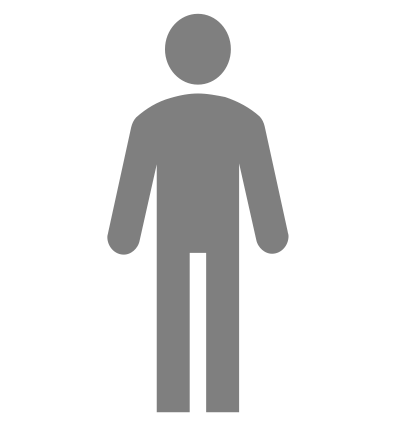
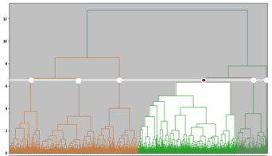
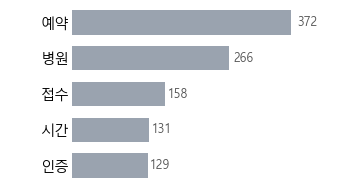
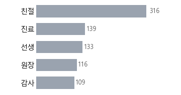
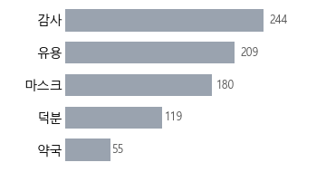
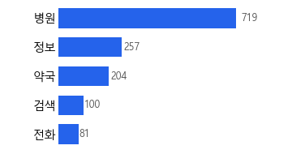
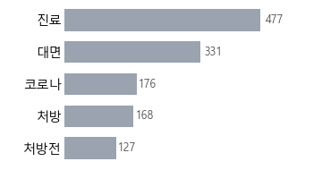
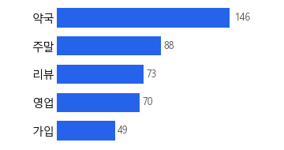
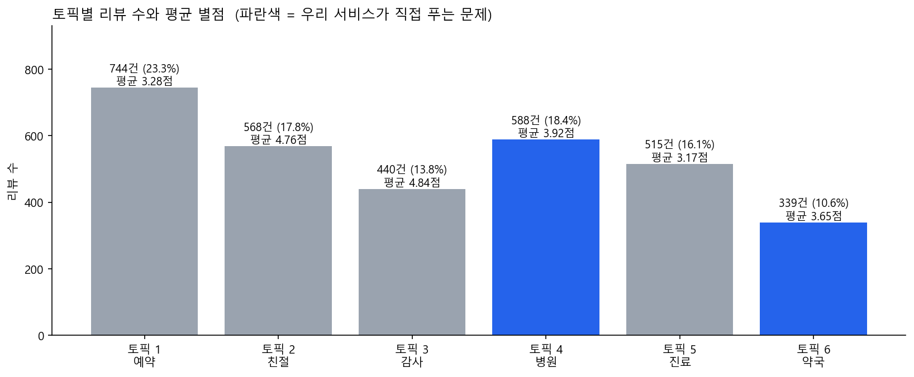
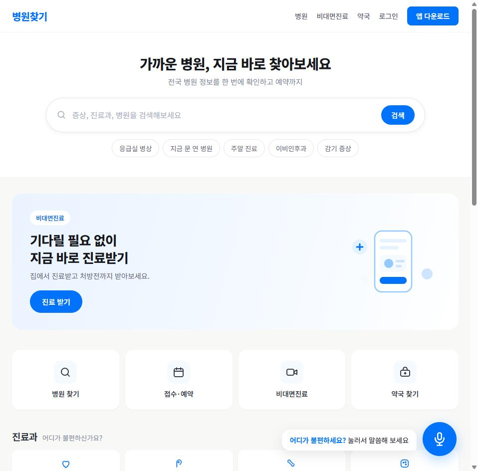

미리보기라 실제 파워포인트와 글꼴이 조금 다를 수 있습니다. 정확한 모양은 위 원본 파일로 확인하세요.
[전체 리뷰 상위 12개]
병원 766건
진료 591건
약국 400건
친절 295건
감사 330건
유용 206건
예약 255건
정보 234건
대면 298건
편리 155건
마스크 162건
시간 178건
박서연 (가명) · #아이둘보호자 #퇴근후병원 #지금문연곳 #검색만20분
퇴근 후 아이가 아플 때, 말 한마디로 '지금 문 연 · 가까운 · 맞는 진료과' 병원을 바로 찾고 싶다.
앱·지도·전화를 오가며 비교하지 않고, 왜 그 병원인지 근거와 길찾기까지 한 번에 받고 싶다.

■ TF-IDF 분석 결과 (굿닥 앱 리뷰 3,194건 · 명사 기준)
[부정 리뷰(별 1~2점) 상위 12개]
병원 · 예약 · 약국 · 진료 · 인증 · 본인
정보 · 접수 · 대면 · 처방전 · 전화 · 시간
→ 전체는 '병원·진료·약국·친절', 부정 리뷰는 '예약·인증·접수·정보'가 앞선다.
※ 건수는 그 단어가 나온 리뷰 수 (실제 수집·분석 결과)
■ 이 서비스가 필요한 이유 (외부 통계 · 출처)
① 밤·주말엔 갈 곳이 적다 → '지금 문 연 곳' 찾기
· 달빛어린이병원 전국 156곳뿐 (국립중앙의료원 E-Gen, 2026.9)
· 소아청소년과 폐업 89곳 > 개업 59곳 (심평원 개·폐업 현황, 2025)
· 응급실 환자 53.3%가 경증 (국립중앙의료원, 2020~23 평균)
② 화면 조작이 어려운 사람이 많다 → 음성으로 묻기
· 고령층 디지털 역량 56.2% (과기정통부·NIA 정보격차 실태조사, 2024)
· 65세 이상 인구 20% 돌파 (행정안전부 주민등록인구, 2024.12)
③ 이미 쓰는 지도로 바로 간다 → 네이버 지도 길찾기 연결
· 지도 앱 이용률 네이버지도 68.3%로 1위 (엠브레인 패널, 2024.9)
④ 진료시간은 공공데이터로 → 심평원 병원정보 API
· 네이버 지역검색 API는 영업시간을 주지 않음 (팀 직접 확인)
· 심평원 API로 전국 병원 79,819곳 직접 수집 (2026.9)
#아이둘보호자 #퇴근후병원 #지금문연곳 #검색만20분
1. 성별 : 여성
2. 나이 : 30대 중반
3. 직업 : 직장인 (퇴근 18:30 전후)
4. 재산 / 월 소득 : 맞벌이 가구
5. 가족 구성 : 배우자 + 미취학 자녀 2명
6. 준거 집단 : 지역 맘카페, 직장 동료
7. 신체 / 건강 : 본인은 건강, 자녀가 잔병치레
8. 취미 : 짧은 산책, 유튜브
9. MBTI : 미확인 (수집 데이터에 없음)
10. 식생활 : 배달·간편식 비중 높음
1. 직면하고 있는 가장 중요한 모순은?
: 정보는 넘치는데 '내 상황'에 맞는 답이 없다
2. 4D 공간 별 가장 중요한 욕구는?
- 정신적 : 잘못 고르지 않았다는 확신
- 물리적 : 지금, 가까이, 열려 있는 곳
- 문화적 : 아이에게 최선을 다했다는 감각
- 사회적 : 남에게 물어보지 않고 스스로 해결
3. 가장 중요한 가치 키워드는?
: 확신 · 속도 · 정확
4. 가장 발달/미성숙한 라인은?
: 검색은 익숙하나 정보 진위 판단은 어려움
5. 가장 생기있게 만드는 모멘트는?
: 한 번에 맞는 병원으로 갔을 때
1. 최근 중요한 Life Event
: 둘째 어린이집 입소 후 잔병치레가 잦아짐
2. 하루 중 문제가 생기는 시각
: 평일 저녁 18~20시, 주말 오전
3. 그때 하는 행동
: 검색 앱 → 지도 앱 → 전화 확인 순으로 왔다 갔다
4. 걸리는 시간
: 조건 비교에만 15~20분 (리뷰 증언 기준)
5. 실패했을 때
: 문 닫은 곳에 헛걸음하거나 응급실로 간다
LDA 토픽 4(병원 검색·정보)가 588건(18.4%)으로 불만 토픽 중 가장 크고, 평균 별점 3.92점으로 만족과 불만이 갈린다. AI로 해결 가능한 구간이 바로 여기다.
· 리뷰에서 병원 단위 연결은 불가
(구글플레이 리뷰는 앱 평가, 일치율 0.12%)
· 따라서 리뷰는 기획 근거로만 쓰고
병원 사실정보는 공공데이터로 확인
· 진료시간 미공개 병원이 남아 있어
'미확인'을 그대로 표시해야 함
스마트폰(주 사용) · 병원 검색 앱 · 포털 지도 · 맘카페 검색
저녁에 아이가 아픈데, 지금 문을 연 소아과가 어디인지 한 번에 알 수 없다
[Actor] 지금 갈 병원을 스스로 골라야 하는 이용자
[Goal] 내 상황(위치·시간·진료과)에 맞는 병원을 한 번에 고른다
[Pain] 먼 병원이 뜨고, 진료시간이 실제와 다르다
Action 1 · LDA 토픽 1
744건 (23.3%)

앱으로 미리 접수해도 병원에서 다시 접수한다. 몰리는 시간엔 접속이 안 된다.
범위 밖(시스템 안정성). 다만 예약 전 '지금 갈 수 있는 곳'을 좁혀주면 헛접수가 준다.
Action 2 · LDA 토픽 2
568건 (17.8%)
진료 후 친절·설명에 만족을 표현한다. 여섯 토픽 중 만족도 2위.
만족 요인(친절·설명)을 병원 '선택 기준'으로 되돌린다 → 리뷰 요약 기능
Action 3 · LDA 토픽 3
440건 (13.8%)
마스크 재고처럼 '지금 어디 있는지'를 정확히 알려줬을 때 만족도가 가장 높았다.
실시간 운영정보가 만족을 만든다는 증거. 응급실 병상·심야약국으로 재현
Action 4 · LDA 토픽 4
588건 (18.4%)
지역을 설정해도 뒤로 가면 초기화된다. '진료중'을 눌러도 먼 병원이 나온다. 지도 앱은 진료과로 못 찾는다.
우리 서비스의 핵심. 자연어에서 지역·시간·진료과를 뽑아 공공데이터로 좁힌다.
[Desire] 말 한마디로 지금 문 연 가까운 병원을 찾고,
추천 이유와 길찾기까지 한 번에 받고 싶다
Action 5 · LDA 토픽 5
515건 (16.1%)
선결제 후 환불 불가, 약 배송 지연. 여섯 토픽 중 만족도 최하위.
운영·물류 영역이라 범위 밖. 이번에 다시 만들지 않는다.
Action 6 · LDA 토픽 6
339건 (10.6%)
주말·영업시간 문의가 모였다. 단 가입·리뷰 불만도 섞여 있어 해석에 주의.
심야약국·응급실 실시간 정보로 답한다. 네이버·카카오는 영업시간을 안 준다.






[Actor] 지금 갈 병원을 스스로 골라야 하는 이용자
병원 찾기·비교 — 지역·진료과·진료시간을 하나씩 골라 목록을 훑는다 [토픽 4 · 588건(18.4%)]
병원, 정보, 약국, 검색, 전화, 위치, 진료, 연결 / 약국, 주말, 리뷰, 영업, 가입
토픽 4 혼재 (평균 3.92점) · 토픽 6 부정 (평균 3.65점) · 토픽 1 부정 (평균 3.28점)
굿닥 앱 병원 검색 화면 · 지역 설정 · '진료중' 필터 · 진료시간 표시
대체재 : 네이버 지도·카카오맵(진료과로 못 찾음) · 포털 검색 · 전화 문의

· 조건을 네 번 나눠 고르게 하는 구조가 이탈을 만든다. 뒤로 가면 지역 설정이 풀린다는 지적이 반복된다.
· '진료중' 필터를 눌러도 먼 병원이 나온다 → 한 문장으로 받아 네 조건을 동시에 적용하면 사라지는 문제다.
[토픽 4 · 별 1점]
“가장 기본적인 기능인 검색부터 불편함. 장소 설정하고 병원보다가 뒤로가기하면 장소 설정해놨던거 초기화;;;; 그러면 다시 장소설정하고 검색해야함... 너무 불편. 병…”
[토픽 6 · 별 1점]
“1. 회원가입 버튼 눌러서 가입완료 2. 로그인 실패라서 비번찾기 기능으로 비번 쉽게 초기화 함 3. 재로그인 하였으나 또 실패 4. 회원가입 다시 하니까 새로 회원…”
[토픽 1 · 별 1점]
“병원 태블릿으로 굿닥 접수하고 왔는데 보호자 핸드폰 입력하고 애기들 한명당 왜 동의를 다 눌러야하고 거기다가 보호자 이름과 연락처를 또 넣어야합니까? 그리고 한 아이…”
· 지금 문 연 곳을 한 번에 알고 싶다
· 증상만 말해도 어느 과인지 알려줬으면
· 왜 이 병원인지 근거를 보고 싶다
· 앱과 지도를 오가지 않았으면
· 조건을 여러 번 고르다 지쳐 이탈
· 뒤로 가면 지역 설정이 초기화됨
· 갔는데 문이 닫혀 있음 (헛걸음)
· 진료시간이 아예 없는 병원이 많음
굿닥 AI 병원 선택 어시스턴트 | 독수리5형제 | 근거: LDA 토픽 4 588건(18.4%), 평균 3.92점
지금 당장 갈 병원을 스스로 골라야 하는 이용자 (특히 저녁·주말에 아이를 데려갈 곳을 찾는 보호자)
진단하는 AI가 아니라 '병원 선택을 도와주는 AI'. 자연어 → 조건 추출 → 공공데이터 검색 → 근거 있는 추천.
웹·모바일 대화창 / 음성 입력 / 목소리 안내 / 네이버지도·카카오맵 길찾기 연결
묻는 말 그대로 답이 나오는 병원 찾기. 왜 이 병원인지 근거까지 함께 보여준다.
전국 병원 79,819곳·약국 25,757곳 공공데이터, 진료시간 59,378곳 확보. 네이버·카카오 API가 주지 않는 정보라 따라오기 어렵다.

더 깊은 사용자 경험
· 추천 이유와 근거 리뷰를 함께 제시
· 모르는 값은 '미확인'으로 정직하게 표시
더 선명한 사용자 경험
· 말로 묻고 목소리로 듣는 입출력
· 고령자·급한 상황에서도 쓸 수 있게
더 넓은 사용자 경험
· 병원에서 약국·응급실까지 한 흐름
· 길찾기까지 이어서 연결
더 큰 사용자 경험
· 전국 단위 공공데이터로 지역 제한 없음
· 실시간 응급실 병상까지 확장